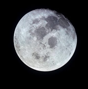
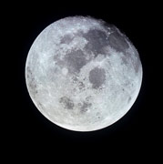

Descrição do planeta:
O Sol aparece no centro do sistema solar como uma estrela anã amarela, sendo uma bola quente composta de gases brilhantes. Devido a sua gravidade, todo o sistema solar se mantém em conjunto porque as correntes elétricas que agem sobre o sol geram um campo magnético realizado pelo vento solar.
As conexões e as interações do Sol com a Terra é que direcionam as estações do ano, as variações de clima, as correntes dos oceanos, os cintos de radiação e as auroras. Assim como o Sol, existem outras estrelas com características parecidas com as dele espalhadas pela galáxia da Via Láctea.
A estrutura do Sol representa 99,8% da massa de todo o sistema solar. O Sol é composto de uma bola de gás. Em termos de números de átomos, ele é feito de 91,0% de Hidrogênio e 8,9% de Hélio. Quanto a composição da sua massa é feita de 70,6% de Hidrogênio e 27,4% de Hélio. A massa é mantida unida pela atração gravitacional e produz muita pressão e alta temperatura em seu núcleo. O Sol possui seis regiões. No seu interior tem o núcleo, a zona radioativa e a zona convectiva. Na superfície visível, a chamada Fotosfera, a Cromosfera e a região ultraperiférica, a coroa.
A energia produzida no núcleo impulsiona o Sol e produz todo o calor e a luz que ele emite. Da fotosfera parte a maior quantidade de radiação solar. Ela não é uma superfície sólida, trata-se de uma camada externa da estrela gassy. A fotosfera é percebida como luz solar quando atinge a Terra aproximadamente 8 minutos após sair do Sol. A sua temperatura é de cerca de 10.000 graus Fahrenheit (5,500 graus Celsius). A Cromosfera e a Corona (Coroa) que são a composição fina da atmosfera do Sol. É por elas que podemos ver as características como manchas e alargamentos solares. É na fotosfera que acontece os eclipses e a Lua cobre sua camada brilhante, deixando que apareça a borda vermelha ao redor do sol que é a Cromosfera. A Corona faz a sua parte e forma uma coroa branca bonita com serpentinas de plasma. A temperatura na atmosfera aumenta significativamente com a altitude, chegando a 3,5 milhões graus Fahrenheit (2 milhões de graus Celsius). Conforme estudos a fonte de aquecimento coronal tem sido um mistério científico a mais de 50 anos.
No Sol não há como abrigar seres vivos porque ele é composto de uma mistura de gases e plasma quentes. Ao mesmo tempo, a luz que Sol emite é que torna possível a vida na Terra. Ele proporciona calor e energia para os organismos e as plantas terrestres formarem suas cadeias alimentares.
O sol não possui luas e nem anéis. Em sua Magnetosfera é gerado um campo magnético complexo que por sua extensão torna-se um campo magnético interplanetário. Todo o volume de espaço controlado pelo campo magnético do Sol é chamado de Heliosfera.
| Que lugar ocupa no Sistema Solar: | está localizado na Galáxia da Via Láctea, está em um braço espiral chamado Orion Spur que se estende para fora do braço de Sagitário. |
|---|---|
| Diâmetro: | 1.392.684 quilômetros |
| Possui massa: | 1,989,100,000,000,000,000,000,000,000,000 Kg |
| Temperaturas: | núcleo: 27 milhões de graus Fahrenheit - superfície: 5,500 °C |
| Período de rotação: | 25.38 dias da Terra/ 609.12 horas |
| Distância média da Terra: | 92,92 milhões de milhas |
Informações recentes:
Inevitável que assim como todas as estrelas, o Sol em algum dia do futuro também perderá sua energia. E quando ele começar a morrer para se tornar uma estrela anã branca, ele se inchará a ponto de envolver os planetas Mercúrio e Vênus e talvez até a Terra. Mas isso ainda vai demorar um bom tempo para acontecer. A previsão dos cientistas é que o Sol dure mais 6,5 bilhões de anos.
A cada 11 anos, o Sol sofre mudanças em sua polaridade magnética e quando isso acontece a Fotosfera, a Cromosfera e a Corona deixam de serem calmas para se tornarem ativas. Há um momento de auge do Sol conhecido como máximo solar. Nesse momento acontece várias tempestades solares, manchas solares, alargamentos solares e ejeções de massa coronal. Nesse processo de mudanças no espaço, os satélites podem sofrer danos, além de corroer as tubulações e afetar as redes elétricas.
Existe uma moderna pesquisa denominada Heliofísica (o estudo do sol) que visa explorar cada vez mais o sistema solar e a relação Sol com a Terra, além de observar as condições do espaço para os estudos dos futuros exploradores.
Galeria de imagens
Descrição do planeta:
Estamos diante do menor e mais rápido planeta do nosso sistema solar. Ele também é o segundo mais denso, o primeiro é a Terra. Mercúrio não tem uma atmosfera, tem uma fina exosfera. O dia nele é superaquecido pelo sol e à noite as temperaturas são centenas de graus abaixo de zero.
Mercúrio leva 88 dias para orbitar o sol e é um dos planetas mais explorados do sistema solar. A cada século, Mercúrio aparece por 13 vezes e nesse evento chamado Trânsito, os observadores na Terra podem assistir Mercúrio passar através da face do sol. Esses trânsitos raros ocorrem em vários dias entre 8 de maio e 10 de novembro. Mercúrio tem uma ressonância de órbita de rotação girando três vezes para cada duas rotações em torno do sol. Um dia em Mercúrio dura cerca de 59 dias terrestres.
Mercúrio é composto de muitas crateras resultantes de colisões de meteoritos e cometas e como destaque tem duas grandes crateras que resultaram de impactos de asteroides, são elas: Caloris (1.550 km ou 990 milhas, em diâmetro) e a Rachmaninoff (306 km ou 190 milhas, em diâmetro). A Caloris é uma das maiores bacias de impacto do sistema solar. Mercúrio também possui grandes áreas de terreno liso com escarpas. Sua composição atmosférica contém Hélio, Sódio e Oxigênio.
No ano de 1991, os astrônomos na Terra fizeram estudos com o uso de radar e detectaram que Mercúrio pode ter gelo em seus polos norte e sul; mostraram em seus estudos que os materiais que foram identificados pelo radar estão presentes apenas em regiões de sombra permanente, por isso eles são frios o suficiente para preservar o gelo.
No ano de 2007, pesquisadores usaram radares terrestres, estudaram o núcleo e encontraram evidências de que ele está parcialmente fundido (líquido). O invólucro externo de Mercúrio (chamado manto e crosta) tem cerca de apenas 400 km de espessura.
As visitas das espaçonaves a Mercúrio na missão da NASA, a Mariner 10 e a MESSENGER, contribuíram para que fosse produzido um tesouro de imagens, dados de composição e descobertas científicas reveladoras de praticamente toda a superfície do planeta. Dessa forma, foi possível mostrar os impactos e o vulcanismo existentes no planeta. Foi cientificamente comprovado que Mercúrio tem uma abundância notavelmente alta dos elementos voláteis como enxofre e potássio, e que seu campo magnético está deslocado em relação ao equador do planeta, o que o faz sua estrutura interna incomum.
| Que lugar ocupa no Sistema Solar: | está localizado entre o sol e o planeta Vênus |
|---|---|
| Diâmetro: | 4.879 km (3.032 milhas) |
| Possui massa: | 3,3011×1023 kg |
| Temperaturas: | máxima: 427°C / mínima: -173°C |
| Período de rotação: | 4.878 km |
| Distância média da Terra: | 91.700.000 Km |
Informações recentes:
Momentos marcantes da exploração de Mercúrio:
• Em 16 de março de 1975, o Mariner10 da NASA fez seu terceiro e último voo de Mercúrio.
• Em 17 de março de 2011, MESSENGER da NASA tornou-se a primeira espaçonave a orbitar Mercúrio.
• O BepiColumbo da ESA, em testes agora, está programado para explorar Mercúrio em 2018. A nova missão se chama BepiColumbo e foi idealizada pela ESA. O nome da nova missão foi escolhido em homenagem ao cientista matemático e engenheiro Giusseppe (BEPI) Colombo. Ele desenvolveu a técnica de assistência gravitacional, fundamental à exploração espacial. A BepiColombo é composta por duas sondas. Os primeiros resultados da missão ainda demorarão muitos anos a chegar à Terra — mesmo que o lançamento seja realizado em 2018, a estação alcançará o planeta apenas em 2025.
• Os geólogos Kelsey Crane e Christian Klimczak da Universidade da Geórgia (EUA) avaliaram o ritmo de refrigeração de Mercúrio e disseram que ele está com os dias contados. Eles calcularam o ritmo de resfriamento e o tempo que Mercúrio levou para diminuir de tamanho. Os estudos foram publicados na revista Geophysical Research Letters. As informações da pesquisa referem-se às descobertas que a sonda MESSENGER encontrou na superfície de Mercúrio. Ela detectou numerosas dobras, sinuosidades e fraturas, concluindo a atividade tectônica do planeta, pelo menos no passado. Segundo os cientistas, essas características podem ter surgido devido ao arrefecimento de Mercúrio. As alterações de tamanho do planeta foram descobertas pela Estação Espacial Mariner 10. O que os geólogos queriam comprovar e somente agora conseguiram é estimar a velocidade e o período em que os processos acontecem. Eles acreditam que o planeta começou a diminuir após um ataque de meteoritos que terminou há 3,8 milhões de anos e durou 400 milhões de anos. As pesquisas afirmam que Mercúrio ainda está se modificando, mas sua atividade tectônica parou e seu campo magnético está enfraquecendo a cada dia.
Galeria de imagens
Descrição do planeta:
O nome Vênus tem origem na homenagem à Deusa Romana que representa o amor e a beleza.
Vênus é um dos quatro planetas terrestres do sistema solar, consiste em um corpo rochoso, tipo terrestre ou telúrico. É similar a Terra em relação ao seu tamanho e massa. Seu diâmetro e massa diferenciam-se muito pouco dos dados do nosso planeta. Por ser muito parecido com a Terra é chamado de planeta irmão da Terra.
Sua composição atmosférica é constituída de Hélio, Sódio, Oxigênio, Dióxido de Carbono, Enxofre e vapor de água. A pressão atmosférica de Vênus é 92 vezes a da Terra. A temperatura é extremamente quente e espessa, capaz de derreter chumbo. O planeta foi mapeado pelo Programa Magellan nos anos de 1990 a 1994 e pelos estudos foi detectado extenso vulcanismo e enxofre na atmosfera, indicando erupções recentes. Vênus não possui crateras de impacto, demonstra jovialidade em sua superfície, aparenta ter entre 300 – 600 milhões de anos. Ele também não possui placas Tectônicas.
É o segundo mais brilhante no céu noturno, vem depois da Lua. É conhecido como estrela da manhã ou Estrela d'Alva por seu brilho destacar algumas horas antes da alvorada e também pode ser chamado de Estrela da Tarde ou Vésper por aparecer algumas horas depois do pôr do sol. Também é chamado de Estrela do Pastor.
| Que lugar ocupa no Sistema Solar: | Cerca de 67 milhões de milhas, cerca de ¾, tanto quanto a Terra é do sol. É o segundo planeta do sistema em ordem de distância do sol |
|---|---|
| Diâmetro: | 12.103 km |
| Possui massa: | 4.8685×1024 kg |
| Temperaturas: | 462 ° C |
| Período de rotação: | -5832,5 horas (-243,021) dias |
| Distância média da Terra: | 40,2 milhões de km |
Informações recentes:
• Vênus se destaca de todos os outros planetas porque apresenta movimento retrógrado, ele gira em movimento oposto aos demais. No planeta Vênus o sol nasce no oeste e se põe no leste.
• As nuvens de Vênus são feitas principalmente de ácido sulfúrico venenoso devido a meteoritos que cruzaram sua atmosfera. Uma partícula de detritos é constituída ou meteoroide quando passa perto de um planeta pode deixar resíduos de elementos mais pesados tais como: Silício, Magnésio e o Ferro.
• O planeta Vênus é escaldante devido a sua camada de atmosfera ser composta por dióxido de carbono. As temperaturas em Vênus chegam até 470 graus célsius.
Galeria de imagens
Fontes:
https://solarsystem.nasa.gov/planets/venus/galleries
http://www.ciencia-online.net/2014/03/10-fatos-estranhos-sobre-venus.html
https://br.pinterest.com/pin/74731675038627161/
https://solarsystem.nasa.gov/planets/compare?Object1=earth&Object2=venus&System=Metric&refresh=Atualizar
http://www.suapesquisa.com/astronomia/planeta_venus.htm
Descrição do planeta:
O nome Terra tem sua origem inglesa / alemã e significa simplesmente o solo. A Terra é o quinto maior planeta do sistema solar e o mais próximo do sol, por isso ele aparece mais brilhante para nós.
É o único planeta que abriga seres vivos. São aproximadamente, 100 milhões de espécies de animais e 400 mil espécies de vegetais na Terra. Os números citados se referem às espécies conhecidas, pois existem milhares que ainda não foram descobertas. As pesquisas continuam intensas por variedades de espécies de seres vivos no Planeta Azul.
A superfície da Terra é composta 70% por água e por isso é chamado de Planeta Azul. A sua massa é composta por elementos como: Oxigênio, Silício e Ferro. E a composição maior fica por conta do Ferro que representa 32,1% da massa total do planeta, sendo 5% de toda a crosta terreste. O Silício compõe 15,1% e o Oxigênio 30,1%.
A velocidade da Terra não é constante, vai mudando lentamente e de forma gradual. Calcula-se que a duração de um dia (rotação completa em torno de seu próprio eixo) pode aumentar 2.3 milissegundos ao longo de um século. Até mesmo eventos como um Tsunami podem alterar levemente a rotação. A cada quatro anos é adicionado aos nossos calendários anuais, um dia para mantê-los consistentes com a nossa órbita em torno do sol. Esse dia é nomeado como dia bissexto e o ano que acontece esse acréscimo chamamos ano bissexto.
Todos os anos, em 22 de abril comemoramos o dia da Terra. A data foi criada no Estados Unidos, pelo senador e ativista ambiental Gaylord Nelson. O motivo baseia-se em promover discussões sobre a importância da preservação dos recursos naturais do Planeta, em especial, as questões ambientais e tudo o que compromete a vida no planeta. A Conscientização é feita através de atividades oferecidas em todo o mundo. O primeiro “Dia da Terra” aconteceu em 22 de abril de 1970.
| Que lugar ocupa no Sistema Solar: | É o 3º planeta mais próximo do sol |
|---|---|
| Diâmetro: | 12.756 km |
| Possui massa: | 5,972 × 10^24 kg |
| Temperaturas: | mínima: - 88 °C e máxima: 58°C |
| Período de rotação: | 23, 9345 (dia) |
Informações recentes:
• As imagens dos Satélites estão cada vez mais nítidas e detalhadas. As expedições espaciais favorecem a nossa visualização para todos os acontecimentos da Terra. A Expedition 50 a bordo da Estação Espacial Internacional do engenheiro Thomas Pesquet fotografou a cidade de Veneza em 14 de fevereiro de 2017. Thomas também teve uma visão noturna da órbita do vulcão mais ativo da Europa, o Monte Etna, em erupção em 19 de março de 2017, na Sicília. O engenheiro também documentou uma das características mais espetaculares do planeta, que é o mar de areia da Naníbia. Ele também pôde presenciar como é visto o deserto do Saara, no oeste da Líbia em 3 de outubro de 2016. As fotos de alvos da Terra foram programadas para serem retiradas pela câmara a bordo da Estação Espacial Internacional, a EarthKAM.
• Após 15 anos de medições, novos estudos apontam que, a altura das nuvens está ficando mais baixa devido a mudança do clima global. As nuvens servem como cobertor isolante da terra. À medida que a Terra aquece, as características das nuvens vão se alterando quanto ao seu brilho e altura. O estudo foi feito com dados do Espectrorradiômetro de imagem de Ângulos Múltiplos (MISR) no satélite Terra da NASA. Foram usadas 9 câmeras apontando para os diferentes ângulos da Terra. As câmeras gravam imagens que permitem aos pesquisadores distinguir as informações sobre as nuvens a serem analisadas para concluir seu estudo. O Instrumento foi lançado em dezembro de 1999 com uma missão de 6 anos de vida, mas os estudos permanecem ativos até hoje. O que sabemos até o momento é que, com os eventos de “La Niña” e o El Niño, as nuvens sofreram efeitos mais fortes. Em 2008, a “La Niña” abaixou as nuvens em 130 pés (40 metros). E o “El Niño” empurrou-as para cima. Em relação ao avanço dos estudos, Roger Davies, professor de Buckley-Glavish, da área de física do clima da Universidade de Auckland, Nova Zelândia, afirma que levarão mais uns 15 anos de pesquisa de dados para comprovar mudanças significativas na altura das nuvens.
Galeria de imagens
Descrição do planeta:
Dentre as várias Luas existentes no Sistema Solar, como as Luas de Júpiter, a Lua do planeta Terra foi a única que recebeu a visita do homem em seu solo.
É provável que a Lua, um satélite natural da Terra, tenha sido formada depois que um corpo celeste, de tamanho considerável, colidiu com o planeta Terra há quase 4,5 bilhões de anos. Dessa formação vieram também as influências da Lua sobre o planeta Terra como as marés, o clima e as ondulações em seu próprio eixo.
Ao olhar para o céu e visualizar esse corpo luminoso, não é possível perceber que a Lua está se afastando da Terra. Além da enorme distância entre a Lua e a Terra, a verdade é que, lentamente, essa distância vai aumentando cerca de uma polegada por ano. Nos dias de hoje, considerando essa distância, seria possível colocar 30 planetas do tamanho da Terra entre os dois corpos celestes.
A estrutura da Lua é formada por um núcleo, o manto e a crosta.
A parte sólida do núcleo é rica em ferro. Em sua parte líquida encontramos ferro e na outra parte que a envolve também encontramos ferro fundido.
O manto pode ser feito de minerais como a olivina e o piroxênio, constituídos por átomos de magnésio, ferro, silício e oxigênio. Os vulcões da Lua não entram em erupção há milhões de anos.
Todos os estudos feitos nas diversas missões até a Lua não apontaram a presença de seres vivos por lá. Sabemos que muito se tem feito para que a presença do homem na Lua aconteça, através de ônibus espaciais. Por enquanto são os investimentos em pesquisas, em tecnologia e as novas descobertas que aproximam a Lua dos seres humanos.
| Que lugar ocupa no Sistema Solar: | Satélite natural que orbita o planeta Terra |
|---|---|
| Diâmetro: | 2,413,402.16 km |
| Possui massa: | 7.3477 x 10^22 kg |
| Temperaturas: | núcleo: 1.500º C - -233/123 °C |
| Período de rotação: | A lua executa uma volta ao redor do nosso planeta a cada 27,322 dias, e sua mudança relativa de posição em relação ao Sol provoca seu ciclo de fases. |
| Distância média da Terra: | 384.400 km |
Informações recentes:
Em 2009, a sonda Lunar Reconnaissance Orbiter (LRO), verificou que o ponto mais frio do Sistema Solar se encontrava na Lua, especificamente, em uma cratera que nunca recebe a luz do sol.
As duas últimas missões à Lua aconteceram no ano de 2013. Na primeira missão a NASA foi responsável por coletar mais informações sobre a estrutura da atmosfera lunar. Na segunda, a China levou até o solo lunar uma nave espacial para implantar o roteador Yutu de Chang'e 3.
Galeria de imagens
 

Fontes:
Descrição do planeta:
Marte também é chamado de Planeta Vermelho por sua cor avermelhada. Seu nome teve origem em homenagem ao deus da guerra. É o planeta mais estudado na antiguidade e foi através das pesquisas de Johannes Keppler (1571-1630) e das observações de Tycho Brahe (1546-1601) que descobriram as leis que regem os movimentos planetários.
Marte é um planeta árido, rochoso, frio e aparentemente sem vida. Ele é semelhante a um deserto. A sua estrutura é bem parecida com a do planeta Terra. Possui calotas polares e nuvens em suas estações, vulcões, cânions e clima reconhecíveis. Foram identificados em sua atmosfera, Íons de Ferro, Dióxido de Carbono, Nitrogênio, Oxigênio e Monóxido de Carbono. Estudos revelaram que Marte é um planeta volátil e por isso continua impressionando os cientistas a cada missão. Ele é o único planeta além da Terra que podemos falar sobre clima. A partir das análises dos dados, os pesquisadores puderam distinguir estações variadas semelhantes às do nosso planeta. O que difere as estações marcianas das terrestres são a quantidade de dias no ano e o número de horas do dia. Em Marte o ano tem quase o dobro dos dias da Terra e as horas marcianas são 24h36 minutos. Nesse caso, as estações em Marte têm em média o dobro das estações terrestres.
Marte possui dois satélites: Phobos e Deimos. O Phobos é o mais próximo do planeta.
Para que possamos entender melhor os estudos sobre Marte, foram descobertos alguns lugares que possuem características parecidas com as dele. São eles:
• Death Valley, Califórnia, onde a cratera Ubehebe e Mars Hill têm Características geológicas semelhantes às de Marte.
• Mono Lake, Califórnia, que é um lago evaporativo de 700.000 anos de idade, que se compara a Cratera Gusey, uma bacia em Marte, onde a água uma vez foi provável.
• Canalizado Scabland em Washington, onde inundações catastróficas varreram a Terra; muito parecido com o que aconteceu há muito tempo na planície de inundação de Ares Vallis, onde Mars Pathfinder desembarcou.
• Permafrost na Sibéria, no Alasca e na Antárdida, onde existe gelo subterrâneo e pequenas formas de vida.
• Vulcões no Havaí, que são como os de Marte, embora muito menores.
Sabemos que ainda existem inúmeras questões a serem respondidas sobre o planeta Marte e a NASA continua com as suas intensas pesquisas porque desejam desvendar se já houve vida humana no planeta vermelho.
| Que lugar ocupa no Sistema Solar: | distância média do sol de 227,9 milhões de km, situando-se entre o planeta Terra e a cintura de asteroides. |
|---|---|
| Diâmetro: | 6.794 km |
| Possui massa: | 163.115.609.799 quilômetros cúbicos - (1.63116 x 10^11 km^3 ) |
| Temperaturas: | máxima: 20 °C / mínima: -140°C |
| Período de rotação: | 24,6 horas |
| Distância média da Terra: | 225 milhões de quilômetros |
Informações recentes:
• O projeto Haughton Mars Project (HMP) da NASA faz parte de uma instalação internacional interdisciplinar de pesquisa de campo localizada na maior ilha desabitada do mundo, a Ilha de Devon. Trata-se de um cenário de deserto polar e clima severo do Alto Ártico canadense que foi escolhido para imitar as condições ambientais que os astronautas possivelmente encontrarão em Marte. Foi testado protótipos de astronautas em 26 de julho e 3 de agosto de 2000. As características do lugar foram detalhadamente avaliadas para que a pesquisa fosse um sucesso. Devido as temperaturas de congelamento, o isolamento e o afastamento, os cientistas teriam oportunidades de pesquisas profundas e marcantes. A ilha de Devon possui fatores de destaque para o desenvolvimento da pesquisa: o ciclo do dia e da noite no Ártico, as capacidades restritas de logística e comunicação. Um grande desafio para os pesquisadores envolvidos no projeto.
• Em 2020 a NASA pretende enviar astronautas em uma missão que durará um ano para que eles possam testar o profundo espaço de Marte, seu terreno e as possibilidades de habitação e adaptação no planeta. Na sua viagem recente a Marte, a NASA objetiva enviar seres humanos para o planeta vermelho na década de 2030. Tudo está bem encaminhado para que os futuros exploradores humanos possam matar suas curiosidades e promover mais descobertas desse planeta desafiador. As pesquisas avançam estudando os possíveis recursos que possam existir em Marte, incluindo oxigênio.
• Em relação a parte da robótica, a exploração em Marte está envolvida em três grandes desafios à medida que os seres humanos se movem mais distantes da Terra: Earth Reliant, Proving Ground e Earth Independent. A exploração de Reliant da Terra é focalizada na pesquisa a bordo da Estação Espacial Internacional. Na estação há um laboratório de microgravidade que serve como banco de ensaio de classe mundial para o uso das tecnologias e sistemas de informação necessários para as missões humanas no espaço profundo. O objetivo é que os astronautas aprendam tudo o que é preciso para viver e trabalhar no espaço por longos períodos de tempo. O aprendizado será útil para eles compreenderem da mudança do corpo no espaço e também como eles poderão proteger a saúde. Depois vão ser feitos os testes no “espaço cislunar”. O espaço foi criado para identificar as capacidades que precisamos para viver e trabalhar em Marte.
Galeria de imagens
Fontes:
https://www.nasa.gov/exploration/humanresearch/analogs/research_info_analog-haughton.html
http://www.siteastronomia.com/planeta-marte
https://seuhistory.com/noticias/uma-das-luas-de-marte-esta-se-quebrando-afirma-estudo-da-nasa
http://revistagalileu.globo.com/Ciencia/noticia/2017/04/nasa-detecta-metal-na-atmosfera-de-marte.html
http://www.cdcc.sc.usp.br/cda/aprendendo-basico/sistema-solar/marte-3-vistas.jpg
http://www.cdcc.sc.usp.br/cda/aprendendo-basico/sistema-solar/marte.html
Descrição do planeta:
É o maior dos planetas dentro do Sistema Solar, por isso suas gigantescas dimensões impressionam, podendo ser observado por um modesto instrumento ótico. Essa bola gasosa é conhecida pela intensidade de fenômenos que ocorrem desde a sua superfície até o seu núcleo, como sua “Mancha Vermelha” que deriva de um fenômeno criado por uma tempestade complexa, um anticiclone.
Júpiter possui temperatura elevada e aspectos que o assemelha ao Sol, porém a enorme pressão interna faz com que muitos elementos se disponham de formas diferentes em determinadas partes do planeta, como é o caso do hidrogênio que sofre alterações e é encontrado nas formas: gasosa, líquida e metálica.
Sua atmosfera parece não ter fim o que não permite aterrisagem, por tudo isso, o que se sabe desse e de outros planetas gasosos são conjecturas.
Satélites de Júpiter: Europa, Ganimedes, IO (os que estão nas órbitas internas a de IO: são Amaltéia, Adrastéia, Metis e Tebe) e Calisto (os que orbitam além de Calisto: Leda, Himália, Lisistéia, Elera, Pasifae, Sínope, Carme e Ananquê).
| Que lugar ocupa no Sistema Solar: | Quinto planeta |
|---|---|
| Diâmetro: | 139.822 km |
| Possui massa: | 1,898 × 10^27 kg (317,8 M^3) |
| Temperaturas: | Estudo alegam que 20 mil graus Celsius |
| Período de rotação: | Dia 9h 54m |
| Distância média da Terra: | 778,33 milhões Km |
Informações recentes:
A NASA tem publicado imagens inéditas do planeta Júpiter após ter enviado a espaçonave JUNO para a sua órbita, em julho de 2016. O objetivo é que com mais informações os estudos sobre o Sistema Solar possam avançar e explicar a origem dos planetas e dos inúmeros fenômenos ocorridos.
Galeria de imagens
Descrição do planeta:
Cientista comprovaram a presença de anéis em alguns planetas, mas nenhum se tornou tão conhecido como os anéis de Saturno; formados por uma abundância de gelo.
A visão dos anéis de Saturno pode variar segundo sua posição em relação a órbita da Terra, parecendo um disco voador ou até mesmo um planeta com linhas laterais. Os estudos mostram que, na verdade, são grandes grupos de anéis que se originaram devido a frequentes choques entre eles.
Saturno é o último planeta visto a olho nu. Através das primeiras pesquisas feitas pelas sondas Pioneer 11 e Voyager 1 e 2, descobriu-se que Saturno tem um formato achatado e é o segundo maior planeta do Sistema Solar.
Esse planeta de esfera maciça possui baixa temperatura em sua atmosfera. Em sua composição verificou-se a presença dos elementos hélio, hidrogênio e amônia. Em pequenas quantidades aparecem neônio, argônio, metano amoníaco, ozônio, anidrido sulforoso e os corantes fosfina e propano. Acredita-se que as colorações como branco e marrom são explicadas pela presença de amônia congelada e hidrosulfeto de amônia.
Saturno ainda tem muito a revelar além dos seus anéis. Sabe-se da presença de 53 luas e outras nove que ainda aguardam mais pesquisas para sua confirmação. Cada lua de Saturno conta muitas histórias; como a presença de uma cobertura de nuvens na atmosfera de TiTã, ou a cratera observada em Phoebe, lua que orbita Saturno em direção contrária as órbitas das outras luas.
| Que lugar ocupa no Sistema Solar: | Sexto planeta do Sistema Solar |
|---|---|
| Diâmetro: | 120.536 km |
| Possui massa: | 5.685 x 10^26 Kg = 95.(16 vezes a massa da Terra) |
| Temperaturas: | núcleo: 12.000 ºC - superfície: 179° C |
| Período de rotação: | 10h23m |
| Distância média da Terra: | 1.280.400.000 km |
Informações recentes:
A sonda Cassini enviou imagens que revelaram a visão da Terra sobre a perspectiva de Saturno. Esse acontecimento só foi possível porque Saturno estava posicionado bloqueando uma passagem de luz suficiente para a captação da imagem pela sonda.
Galeria de imagens
Descrição do planeta:
Urano é o terceiro maior planeta do Sistema Solar. Foi encontrado pelo astrônomo William Herschel com ajuda de um telescópio em 1781.
Apresenta-se como um planeta gelado, com grande volume gasoso e de ventos fortes. É o único que gira com inclinação de quase 90 graus, parecendo uma bola de rolamento orbitando o Sol.
Urano tem massa constituída em sua maior parte de água, metano e amônia. O metano encontrado na atmosfera absorve a parte vermelha da luz do sol e produz sua cor azul esverdeada. Sua superfície gelada e de pressões extremas impede o pouso de espaçonaves; uma possível tentativa ocasionaria em destruição de qualquer material metálico em contato com as condições existentes no planeta.
As 27 conhecidas de Urano receberam nomes inspirados nos personagens das obras de William Shakespeare e Alexander Pope. Alguns exemplos desses nomes são Titânia, Oberon e Ariel. As luas internas são formadas de gelo e rocha e a constituição das suas luas externas é desconhecida.
| Que lugar ocupa no Sistema Solar: | Sétimo planeta do Sistema Solar |
|---|---|
| Diâmetro: | 50.724 km |
| Possui massa: | 8.686×10^25 kg (cerca de 86 bilhões de bilhões de toneladas) |
| Temperaturas: | Núcleo: - 216º C - Superfície: - 193º C |
| Período de rotação: | 16h e 11 minutos |
| Distância média da Terra: | 2,584 bilhões de km |
Informações recentes:
Em março de 2011, a nave New Horizons torna-se a segunda nave a ultrapassar a órbita de Urano quando seguia para Plutão.
Galeria de imagens
Descrição do planeta:
Netuno foi encontrado por um matemático francês Urbain Joseph Le Verrier, mas suas descobertas foram reconhecidas em 1846, por um astrônomo alemão Johann Gottfried Galle que, além de confirmar a existência de Netuno no Sistema Solar, ainda descobriu sua maior lua: Tritão. Sabe-se que Netuno possui 14 satélites naturais, os principais, além de Tritão, São Proteu e Nereida.
Conhecido como um gigante de gelo, Netuno apresenta uma atmosfera com extensa profundidade. Os cientistas apontaram a presença de Hidrogênio, Hélio, Deutério, Etano e Metano, esse último pode ser o responsável por sua coloração azul. Essa atmosfera profunda, funde-se gradualmente em água e gelo derretido até o núcleo; seu núcleo mais sólido e mais pesado tem aproximadamente o tamanho da Terra, contendo rocha e gelo.
Se comparados as inclinações dos eixos magnéticos de Netuno e Urano com o eixo de rotação, percebe-se que os dois são deslocados do interior do planeta, provocando variações tão fortes na magnetosfera de Netuno que colocam seu campo magnético com capacidade 27 vezes maior que o da Terra.
Outro fenômeno chamado ressonância estável acontece na relação entre esses dois planetas e permite a Netuno e Plutão um padrão de repetição em suas órbitas que garante que eles nunca se choquem, apesar de se cruzarem. Isso também modifica a posição dos dois planetas em relação ao Sol; o campo magnético dos dois planetas sofre deslocamento e quando Plutão cruza a órbita de Netuno ele fica mais próximo ao Sol e deixa de ocupar a oitava posição.
| Que lugar ocupa no Sistema Solar: | Oitavo planeta |
|---|---|
| Diâmetro: | 49.244 km |
| Possui massa: | 1026 kg |
| Temperaturas: | núcleo: Pode chegar a 7000°C - superfície: -215°C |
| Período de rotação: | 16h 6,5 minutos |
| Distância média da Terra: | 4,307 bilhões de km |
Informações recentes:
Em 2013, cientista que estuda os arcos de Netuno analisava imagens arquivadas pelo telescópio Hubble e encontrou sua 14º lua.
Galeria de imagens